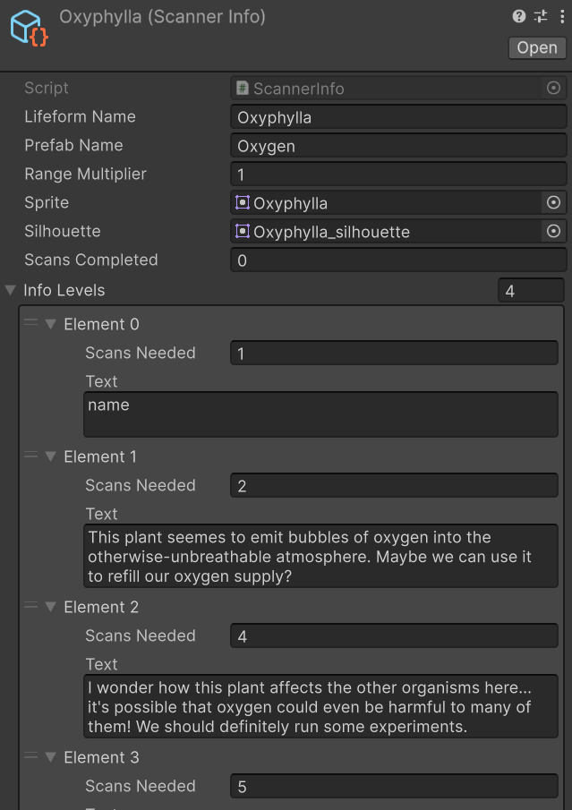
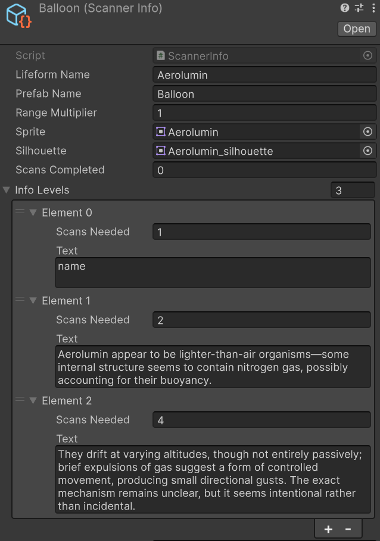

Ian Stolte
Gameplay Programmer
Play as two crash-landed astronauts on an alien world, using its strange lifeforms to survive as you climb through a massive ravine in the planet's center. Open-world survival meets co-op climbing in a beautiful-but-deadly environment.
Role: Lead Engineer
Team Size: 2
Project Length: 3 months
Engine: Unity
Programming:
The rope climbing system is our core mechanic, and getting its movement to feel snappy and responsive was one of the biggest challenges (and successes!) of the project. We wanted climbing to be easy to learn but with enough skill to challenge repeat players— and to top it off, it needed to work with any surface in the game.
I did this by focusing on a clean, simple UX first, then modifying the game feel to support the fantasy we wanted. All a player has to think about is clicking to throw two anchors, pressing E to attach to the created rope, and then moving forward to climb. Behind the scenes, though, there's a bunch of situational movement code to make this feel great. For example:
The game is inherently co-op, so I had to build every feature in the game with multiplayer in mind. I used Unity's Netcode for GameObjects (NGO) for all of the multiplayer logic, and implemented a Steamworks transport so players can connect across any online network, not just over LAN.
I did both the UI design and programming, with a focus on minimal, situational UI; the goal was to let the 3D world shine and have relevant keybinds appear only when you need them. One of my favorite UI-adjacent tasks was the scanner + journal system, which is how players learn more about the lifeforms they encounter:
This system is super modular, using a Scriptable Object for each lifeform and constructing the journal and scan results with whatever the current state of those objects is. This makes it easy to add new lifeforms or edit their journal entries, since all you have to do is make a new Scriptable Object or edit some text!

